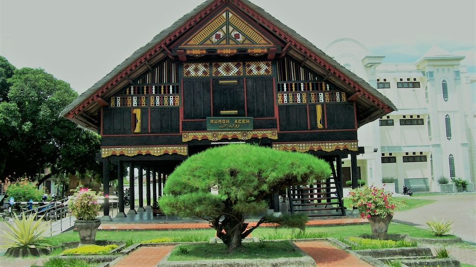
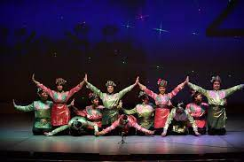
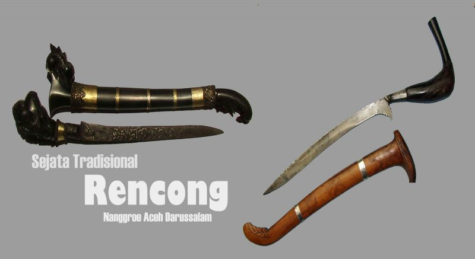
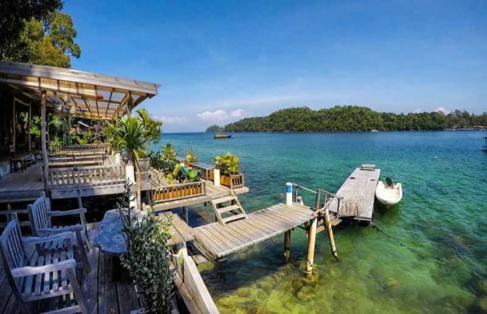
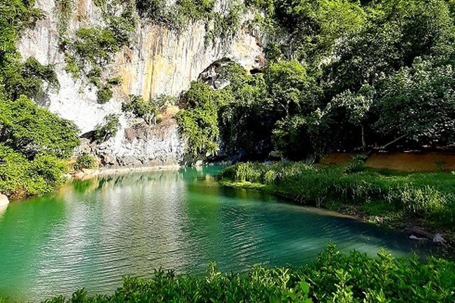

Aceh
Aceh adalah sebuah provinsi di Indonesia yang ibu kotanya berada di Banda Aceh. Aceh merupakan salah satu provinsi di Indonesia yang diberi status sebagai daerah istimewa dan juga diberi kewenangan otonomi khusus. Aceh terletak di ujung utara pulau Sumatra dan merupakan provinsi paling barat di Indonesia. Menurut hasil sensus Badan Pusat Statistik tahun 2021, jumlah penduduk provinsi ini sekitar 5.333.733 jiwa. Letaknya dekat dengan Kepulauan Andaman dan Nikobar di India dan terpisahkan oleh Laut Andaman. Aceh berbatasan dengan Teluk Benggala dan Laut Andaman di sebelah utara, Samudra Hindia di sebelah barat, Selat Malaka di sebelah timur, dan Sumatra Utara di sebelah tenggara dan selatan.
Informasi Umum
| Nama | Kode Wilayah Indonesia | Kode Internasional | Singkatan Umum | Ibu Kota | Hari Jadi | Lambang |
|---|---|---|---|---|---|---|
| Aceh | 11 | ID-AC | - | Banda Aceh | - |
Budaya
Rumah Adat
Rumah tradisional Aceh dinamakan Rumoh Aceh. Rumah ini bertipe rumah panggung dengan 3 bagian utama dan 1 bagian tambahan. Tiga bagian utama dari rumah Aceh yaitu seuramoë keuë (serambi depan), seuramoë teungoh (serambi tengah) dan seuramoë likôt (serambi belakang). Sedangkan 1 bagian tambahannya yaitu rumoh dapu (rumah dapur).
Tarian Tradisional
Aceh memiliki banyak tarian dari 9 etnis yang ada. Beberapa tarian yang terkenal di tingkat nasional dan bahkan dunia merupakan tarian yang berasal dari Aceh, seperti Tari Saman dan Tari Seudati.
Tari Saman merupakan salah satu media untuk menyampaikan pesan atau dakwah. Tarian ini mencerminkan pendidikan, keagamaan, sopan santun, kepahlawanan, kekompakan dan kebersamaan.

Tari Seudati adalah salah satu tarian tradisional yang berasal dari daerah Aceh. Tarian ini biasanya ditarikan oleh sekelompok penari pria dengan gerakannya yang khas dan enerjik serta diiringi oleh lantunan syair dan suara hentakan para penari. Tari Seudati ini merupakan salah satu tarian tradisional yang cukup terkenal di daerah Aceh, dan sering ditampilkan di berbagai acara, baik acara adat, acara pertunjukan, dan acara budaya.
Bahasa Daerah
Bahasa daerah yang paling banyak penuturnya adalah bahasa Aceh yang dipakai oleh suku Aceh. Selain itu juga terdapat bahasa Gayo, Alas, Kluet, Singkil, Jamee dan Melayu Tamiang. Di Simeulue terdapat 3 bahasa yaitu bahasa Devayan, Sigulai, dan Leukon. Selain itu juga terdapat bahasa Haloban di Pulau Banyak. Beberapa bahasa daerah dari bagian Indonesia lainnya juga dipertuturkan oleh sebagian penduduk di Provinsi Aceh. Di antaranya, yaitu bahasa Jawa yang tersebar di berbagai wilayah transmigrasi di seluruh Aceh.
Tradisi Adat
Aceh merupakan kawasan yang sangat kaya dengan seni budaya. Aceh mempunyai aneka tradisi salah satunya seperti Tradisi Peusijuek. Peusijuek adalah sebuah prosesi adat dalam budaya masyarakat Aceh yang masih dipraktikan hingga saat ini. Tradisi peusijuek ini dilakukan pada hampir semua kegiatan adat dalam kehidupan masyarakat di Aceh. Misalnya ketika memulai sebuah usaha, menyelesaikan persengketaan, terlepas atau selesai dari musibah, menempati rumah baru, merayakan kelulusan, memberangkatkan dan menyambut kedatangan haji, kembalinya keluarga dari perantauan dan masih banyak lagi.
Senjata Tradisional
Rencong adalah senjata tradisional bangsa Aceh, bentuknya menyerupai huruf L, dan bila dilihat lebih dekat bentuknya merupakan kaligrafi tulisan bismillah. Rencong termasuk dalam kategori belati. Selain rencong, bangsa Aceh juga memiliki beberapa senjata khas lainnya, seperti sikin panyang, peurise awe, peurise teumaga, siwah, geuliwang dan peudeueng.
Lagu Daerah
Bungong Jeumpa adalah lagu daerah yang berasal dari Aceh. Bungong Jeumpa dalam bahasa Aceh berarti bunga cempaka. Lagu ini memiliki arti penting dalam budaya suku Aceh yang menggambarkan semangat dan keindahan Tanah Aceh dan menjadi simbol bunga khas di Kesultanan Aceh.
Kuliner
Aceh mempunyai aneka jenis makanan yang khas. salah satu kuliner khas Aceh yang juga sangat terkenal bahkan hingga ke mancanegara adalah Mi Aceh, sejenis mi kuning basah yang diracik dengan bumbu khas nan pedas
Selain itu makanan yang khas Aceh lain yakni, Timphan. Timphan adalah penganan kecil sejenis lepat. Bahan untuk membuat timphan terdiri dari tepung, pisang, dan santan. Semua bahan ini kemudian diaduk-aduk sampai kenyal. Lalu dibuat memanjang dan di dalamnya diisi dengan serikaya atau kelapa parut yang dicampur dengan gula. Kemudian adonan ini dibungkus dengan daun pisang dan dikukus (rebus tanpa direndam air) selama satu jam.
Destinasi Wisata
Salah satu wisata alam yang terkenal di Aceh adalah wisata pantai, pantai pasir putih yang terkenal diantaranya Pantai Lampuuk di Aceh Besar dan Pantai Pasi Saka di Aceh Jaya.
Selain itu Aceh juga dikenal dengan cakupan hutan yang masih cukup lestari seperti Taman Nasional Gunung Leuser. Beberapa satwa endemis Sumatra masih lazim ditemukan di Aceh seperti orangutan, gajah, harimau dan badak.
